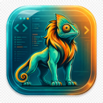

Gradient-inspired chrome
Samples a two-color pair across supported workbench color keys instead of installing a complete theme.

Camaleone
VS Code and Cursor extension
Color for IDE windows. Two selected colors become a workbench identity across the title bar, activity bar, side bar, panel, status bar, buttons, borders, and optional editor accents.
Camaleone gives every editor window a recognizable visual identity without asking you to install or switch full themes.
It samples a start-to-end color pair into the workbench color API, keeps default sober output restrained, and lets you restore or reset managed colors cleanly.
Marketplace overview


Feature set
Samples a two-color pair across supported workbench color keys instead of installing a complete theme.
Keeps secondary surfaces calm while tinting the high-signal areas that identify a window quickly.
Tune title bar, activity bar, side bar, panels, status bar, buttons, borders, and editor accents.
Ships brand-inspired Magnificent 7 and QS top university presets, plus user-saved palettes.
Apply colors to the current workspace or to user settings for every editor window.
Restore replaced colors or remove Camaleone-managed keys to return to editor defaults.
Workflow
Open the picker from the Command Palette, choose a start and end color, generate a palette with Surprise me, then adjust individual surfaces when the automatic result needs a more deliberate touch.
Project descriptor
Availability